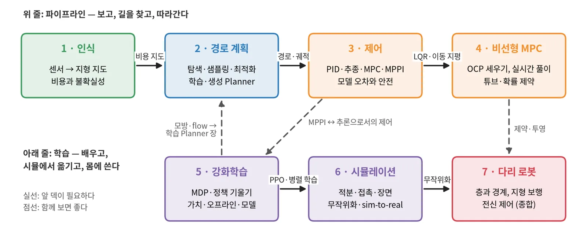
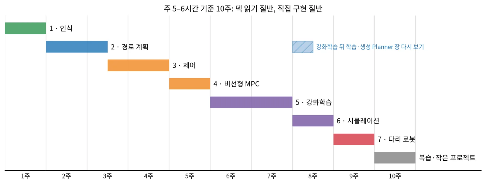

로봇 공부 로드맵 · 0단계
인식에서 다리 로봇까지 일곱 개념 덱의 순서, 의존 관계, 10주 계획, 덱마다 교과서와 직접 구현
1 인식
2 경로 계획
3 제어
4 비선형 MPC
5 강화학습
6 시뮬레이션
7 다리 로봇
0 · 순서를 정한 원칙
로봇은 보고(인식), 길을 찾고(계획), 따라간다(제어). 앞 단계의 출력이 뒤 단계의 입력이라, 이 순서로 보면 "이 값은 어디서 왔나"가 늘 분명하다.
탐색·피드백·최적화의 보장을 알아야 학습 방법이 무엇을 버리고 무엇을 얻는지 판단할 수 있다. 그래서 강화학습은 제어와 MPC 뒤에 둔다.
다리 로봇 덱은 인식·제어·강화학습·시뮬레이션을 모두 쓴다. 앞의 여섯 덱을 본 뒤에 보면 각 연구가 어느 층을 바꿨는지 읽힌다.
0 · 의존 관계

1 · 일곱 덱 한눈에
| 단계 | 덱 | 답하는 질문 | 장 수 | 기간 |
|---|---|---|---|---|
| 1 | 로봇 인식 기초 | 센서 값으로 어디가 갈 만한 땅인지 어떻게 아나? | 38 | 1주 |
| 2 | 경로 계획 기초 | 지도 위에서 갈 길을 어떻게 찾고, 배워서 찾으면 무엇이 다른가? | 47 | 1.5주 |
| 3 | 로봇 제어 기초 | 찾은 길을 모델 오차와 지연 속에서 어떻게 안전하게 따라가나? | 45 | 1.5주 |
| 4 | 비선형 MPC 구축 기초 | 제약 있는 최적 제어를 매 주기 실시간으로 어떻게 푸나? | 38 | 1주 |
| 5 | 강화학습 기초 | 정답 없이 보상만으로 어떻게 행동을 배우나? | 54 | 2주 |
| 6 | 로봇 시뮬레이션 기초 | 시뮬에서 배운 것을 언제 믿고 실물로 옮길 수 있나? | 32 | 1주 |
| 7 | 다리 로봇 내비게이션 기초 | 층을 어디서 나누고, 학습한 보행을 어떻게 안전하게 쓰나? | 37 | 1주 |
1 · 필요한 수학
| 배경 | 핵심만 | 많이 쓰는 덱 |
|---|---|---|
| 선형대수 | 행렬 곱, 좌표 변환, 고윳값, 양의 정부호 | 1 인식, 3 제어, 4 MPC |
| 확률·통계 | 기댓값, 가우시안, 베이즈 갱신, 신뢰구간 | 1 인식, 5 강화학습, 6 시뮬레이션 |
| 최적화 | 기울기, 볼록성, KKT, 뉴턴법 | 2 경로 계획, 4 MPC, 5 강화학습 |
| 미분방정식 | 상태공간 모델, 수치 적분, 안정성 | 3 제어, 4 MPC, 6 시뮬레이션 |
| 그래프 알고리즘 | 최단 경로, 우선순위 큐, 휴리스틱 | 2 경로 계획 |
| 신경망 학습 | 회귀·분류 손실, 역전파, 과적합 | 2 경로 계획 3–4장, 5 강화학습, 7 다리 로봇 |
1 · 목적별 경로
처음 공부하거나 로봇 시스템 전체를 보고 싶을 때. 강화학습 뒤에 경로 계획의 학습·생성 장을 다시 본다.
모델 기반 제어기를 만드는 사람. 제어와 MPC를 깊게, 고전 계획과 적분기·접촉만 더한다.
학습 정책을 만드는 사람. 강화학습 덱은 다른 덱 없이 볼 수 있다. 제어 덱의 2–3장(LQR, MPPI)을 곁들이면 좋다.
1 · 10주 계획

2 · 한 덱을 공부하는 법
0장의 배경지식 네 가지와 이 덱의 자리(앞 덱에서 가져올 것)를 먼저 본다.
장마다 그림이 무엇을 계산했는지 말해 보고, 장점·단점 카드를 자기 말로 바꿔 적는다.
공부 순서 장의 질문에 답하고, 작은 구현을 하나 하고, ★ 표시 문헌부터 읽는다.
| 덱 안의 장 | 무엇에 쓰나 |
|---|---|
| 절 끝의 장단점 표, 덱 끝의 종합표 | 복습. 표만 보고 각 칸의 이유를 말할 수 있는지 확인한다 |
| 흔한 함정 | 직접 구현할 때 처음 부딪힐 문제의 목록 |
| 발표자 노트(N 키) | 장마다 그림과 수식을 문장으로 풀어 쓴 설명 |
2 · 덱마다 교과서
| 덱 | 교과서 | 먼저 읽을 곳 |
|---|---|---|
| 1 인식 | Thrun·Burgard·Fox, Probabilistic Robotics (2005) | 2–3장 베이즈·칼만 필터, 9장 점유 격자 |
| 2 경로 계획 | LaValle, Planning Algorithms (2006, 온라인 공개) | 2장 이산 탐색, 4장 구성 공간, 5장 샘플링 |
| 3 제어 | Åström·Murray, Feedback Systems (2판, 2021, 온라인 공개) | 피드백·안정성·PID 장 |
| 4 비선형 MPC | Rawlings·Mayne·Diehl, Model Predictive Control (2판, 2017) · Nocedal·Wright, Numerical Optimization (2판, 2006) | MPC 책 1–3장, 8장 · 최적화 책 12장 KKT, 18장 SQP |
| 5 강화학습 | Sutton·Barto, Reinforcement Learning: An Introduction (2판, 2018) · UC Berkeley CS 285 강의 | 3–6장, 13장 |
| 6 시뮬레이션 | MuJoCo 문서의 Computation 장 | 적분기, 접촉 모델 |
| 7 다리 로봇 | Raibert, Legged Robots That Balance (1986) · Rudin 외, 2109.11978 | 균형과 디딤 · 병렬 RL 보행 절차 |
2 · 덱마다 직접 구현
| 덱 | 작은 구현 | 구현하며 확인할 것 |
|---|---|---|
| 1 인식 | 2D 광선 투사 + log-odds 격자 | 왜 덧셈이 되나, 구덩이는 왜 안 보이나 |
| 2 경로 계획 | 격자 A*, RRT | 휴리스틱 가중치에 따라 확장 노드 수와 경로 길이가 어떻게 바뀌나 |
| 3 제어 | PID, pure pursuit, 수십 줄 MPPI | 이득·지연·온도가 응답을 어떻게 바꾸나 |
| 4 비선형 MPC | CasADi + IPOPT로 유니사이클 장애물 회피 | 초기값과 soft 제약 가중치가 해를 어떻게 바꾸나 |
| 5 강화학습 | 격자 세계 가치 반복, CartPole REINFORCE | baseline이 분산을 얼마나 줄이나 |
| 6 시뮬레이션 | 용수철 적분기 비교, 튀는 공 | Euler가 에너지를 만들고, 강성과 Δt가 맞물리는 것 |
| 7 다리 로봇 | Isaac Lab 4족 예제 + 높이 지도 관측 | 관측을 바꾸면 학습 곡선과 지형 성공률이 어떻게 바뀌나 |
2 · 그다음
덱마다 참고문헌 앞 장이 먼저 읽을 문헌이다. 서론과 방법 절만 먼저 읽고, 덱의 그림과 대조한다.
같은 갤러리에 있다. 기초 덱의 장단점 표에서 궁금해진 방법을 골라 최근 변형을 본다.
지도 갱신 + 계획 + 추종, 또는 시뮬에서 PPO 정책 학습 + 도메인 랜덤화. 엮을 때 덱 사이의 화살표가 손에 잡힌다.
정리
인식 → 경로 계획 → 제어 → 비선형 MPC → 강화학습 → 시뮬레이션 → 다리 로봇.
앞 덱의 출력이 뒤 덱의 입력이다. 점선 연결 셋은 덱을 가로질러 다시 본다.
전체 10주, 제어·최적화 5주, 학습 6주 가운데 목적에 맞게 고른다.
선형대수, 확률, 최적화, 미분방정식, 그래프, 신경망 학습의 기초.
배경지식 → 그림과 장단점 → 질문 → 작은 구현 → ★ 문헌.
덱마다 답하는 질문에 자기 말로 답할 수 있으면 다음 덱으로 간다.